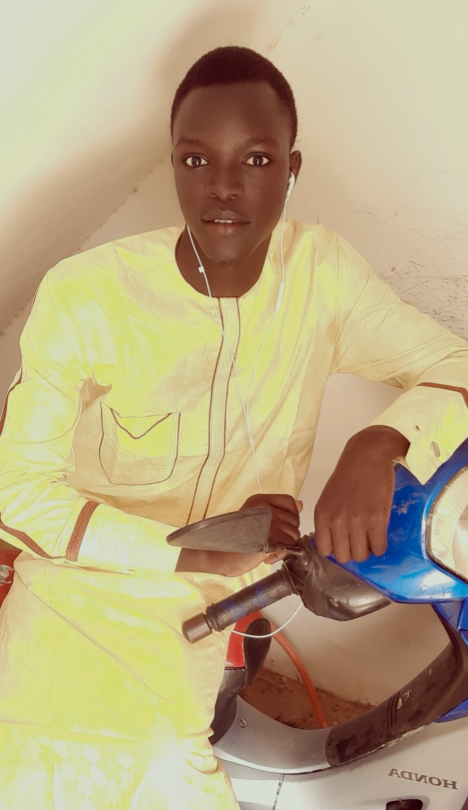

Le code source ainsi qu'une documentation compléte du projet sont disponibles sur notre dépot Github
que vous pouvez trouver en suivant ce lien : Projet-1-POO2-GL-2021
Clonez et exécuter les scripts en local pour voir le rendu !
Alla NIANG
Etudiant en Licence 3 Informatique Option Génie Logiciel
Abdoul Dibavata BOCOUM
Etudiant en Licence 3 Informatique Option Génie Logiciel